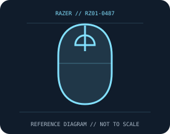

[ MICE AND TRACKBALLS // IDENTIFIED COMPONENT ]
Razer Basilisk V3 X HyperSpeed Wireless Gaming Mouse
Right-handed wireless mouse with a thumb rest, nine programmable controls, and dual HyperSpeed/Bluetooth radios.

MODEL IDENTIFICATION: RZ01-0487. Confirm printed identifiers, revision, region, and included accessories before repair or compatibility claims.
Model specifications
| Catalog leaf | Mice and trackballs |
|---|---|
| Exact model / identifier | RZ01-0487 |
| Sensor and switches | Razer 5G Advanced optical sensor, up to 18,000 DPI; up to 1,000 Hz report rate over the supplied HyperSpeed receiver. Second-generation Razer mechanical mouse switches rated up to 60 million clicks. |
| Wired/wireless interface; polling and DPI | HyperSpeed 2.4 GHz USB-A receiver or Bluetooth; wireless only. Razer Synapse supports configuration on compatible Windows hosts. |
| Dimensions and weight | 130.1 × 75.1 × 42.5 mm; about 110 g with AA battery. |
| Host and driver compatibility | Basic pointer operation requires a compatible Bluetooth or USB host. Synapse customization and firmware features require supported Windows software; check support notes for OS and version. |
| Power and battery | One replaceable AA battery; manufacturer quotes up to 285 hours on HyperSpeed or 535 hours on Bluetooth. No rechargeable internal battery. |
| Revision and SKU caveats | Verify RZ01-0487, battery, receiver, regional suffix, and firmware. Runtime varies with use; do not assume Basilisk V3 wired or Basilisk V3 Pro parts, switches, or radio features are equivalent. |
Preservation and service
Keep the receiver, cable, battery cover, and included accessories with the identified mouse. Clean optical apertures and trackball contacts without introducing liquid; record host OS, driver/firmware version, connection mode, and battery condition during tests.
Published maximum DPI, polling, click-life, and runtime values are manufacturer figures under specific test conditions, not a guarantee of individual-unit performance.
Manufacturer sources
- Razer Basilisk V3 X HyperSpeed product pageManufacturer product or support documentation; confirm the exact SKU, region, and revision against the device label.
- Razer Basilisk V3 X HyperSpeed supportManufacturer product or support documentation; confirm the exact SKU, region, and revision against the device label.
Manufacturer documentation changes over time; retain the applicable manual and revision with the physical equipment record.